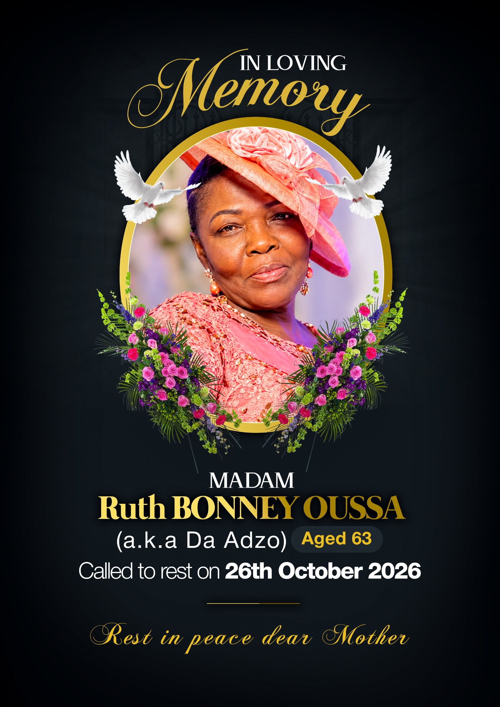

at the family residence
at the cemetery in Ewegbe-Hohoe
Our mother, Mrs. OUSSA, Sister Adjo, went to be with her Lord at the age of 63.
Lost for words to express what we feel, we know one thing: she is not lost. She is with the One she loved with all her heart.
“I am the resurrection and the life. He who believes in me will live, even if he dies; and whoever lives and believes in me will never die.” — John 11:25-26
Our mother did not simply speak to us about God: she made Him known to us through her life. We learned to love the Lord by watching her love Him. We learned to pray by hearing her pray. We learned to believe by seeing her believe, even when everything seemed hard.
How many times did she tell us not to give up, to stand firm, to persevere in the faith? When we were tired, discouraged or tempted to let go, her voice was there: “Hold on. God is faithful.” Even today, those words echo within us, and we will carry them all our lives.
“She opens her mouth with wisdom, and kind instruction is on her tongue. Her sons rise up and call her blessed.” — Proverbs 31:26, 28
Mama, today we rise up, and we call you happy and blessed.
Sister Adjo was a woman of prayer. In the secret of her room, on her knees, she carried each one of us before God. She prayed for our studies, our paths, our families, our struggles. She prayed for her church, for her brothers and sisters, and even for people whom few noticed.
We will never know everything God did in answer to her prayers. But we know that much of what we are and what we have, we owe to her knees worn down before the throne of grace. Her prayers did not die with her: they continue to plead for us before God.
“Pray without ceasing.” — 1 Thessalonians 5:17
She lived out this verse, simply, every day.
And there was that smile. That smile that never left her. The one that welcomed everyone, young or old, known or unknown. The one that reassured without a word, that disarmed closed hearts and warmed the coldest homes.
Her smile was not that of a life without trials; our mother knew her struggles. But she had understood that the joy of the Lord is a strength, and she wore it on her face as a testimony.
“She is clothed with strength and glory, and she laughs at the days to come.” — Proverbs 31:25
Today, we weep. We do not hide it; Jesus Himself wept at the tomb of His friend. Our grief is real, because our love is real. There will be days when we will miss her voice, when her empty chair will weigh on us, when we will simply long to hear her say: “My child, take courage.”
But we do not grieve as those who have no hope.
“But we do not want you to be ignorant, brothers, concerning those who have fallen asleep, so that you will not grieve as the rest do, who have no hope.” — 1 Thessalonians 4:13
We have the assurance that she sleeps in Christ, and that we will see her again.
“He will wipe away every tear from their eyes. Death will be no more; there will be no more mourning, no more crying, no more pain.” — Revelation 21:4
Mama, you have finished your course. You were not perfect — no one is — but you were faithful. You loved God, you loved people, you raised your children in the fear of the Lord. Today, we can say of you what the apostle Paul said of himself:
“I have fought the good fight, I have finished the course, I have kept the faith. From now on, the crown of righteousness is reserved for me.” — 2 Timothy 4:7-8
And we believe that the Lord welcomed you with these words: “Well done, good and faithful servant; enter into the joy of your master.” (Matthew 25:21)
Mama, we make you a promise, on behalf of all your children. We will keep the faith you handed down to us. We will keep praying, loving one another, supporting one another, and forgiving. We will keep your smile alive in our homes and in our lives. And we will see to it that what you sowed with tears, we reap with joy.
“Those who sow with tears will reap with shouts of joy.” — Psalm 126:5
We do not say goodbye, but see you again in our Father’s house.
Thank you for your faith, thank you for your prayers, thank you for your smile, thank you for your love. We love you, and we will honor you all our lives.
Rest in peace, Sister Adjo. Your smile, your faith and your love live on in us.